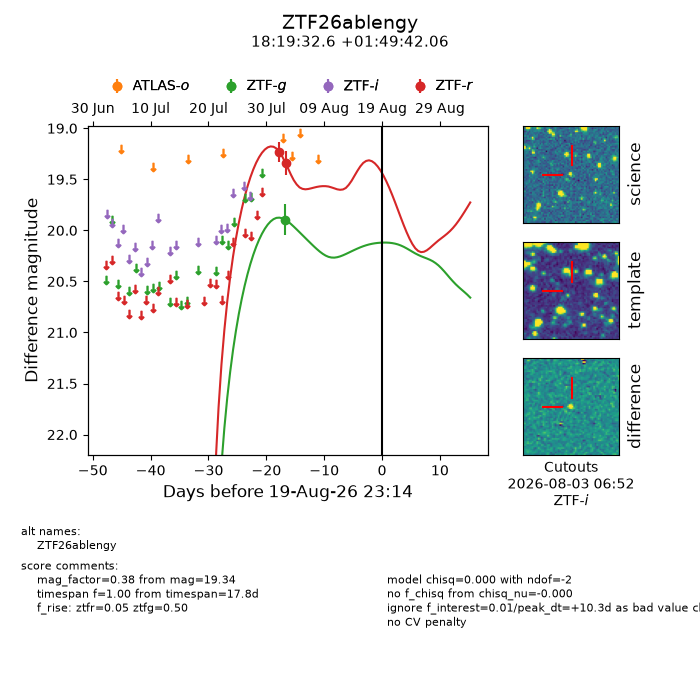
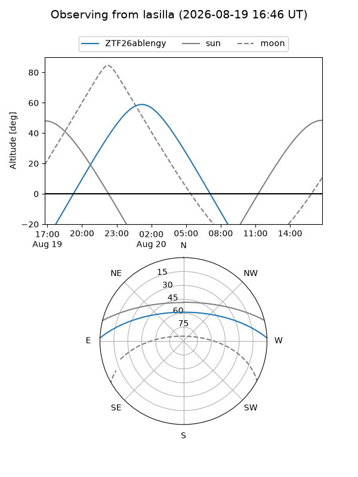
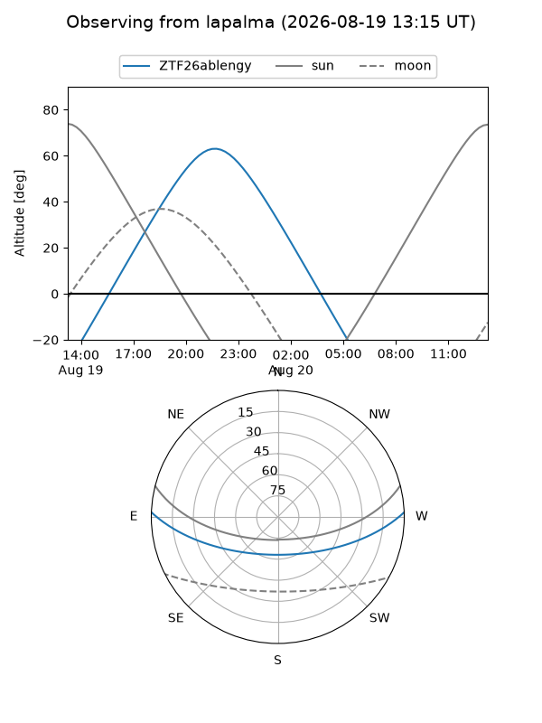
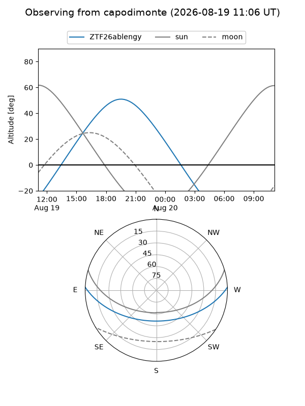
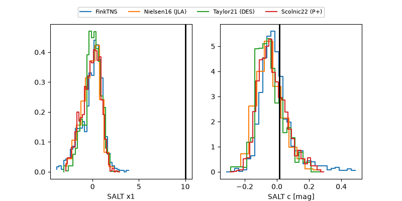

ZTF26ablengy
Target ZTF26ablengy at 2026-08-20 10:15
Aliases and brokers:
FINK-ZTF: ztf.fink-portal.org/ZTF26ablengy
Lasair-ZTF: lasair-ztf.lsst.ac.uk/objects/ZTF26ablengy
ALeRCE-ZTF: alerce.online/object/ZTF26ablengy
Direct TNS query: direct search
alt names
ZTF26ablengy (ztf,fink_ztf)
Coordinates:
equatorial (ra, dec) = 274.8857,+1.82835
equatorial (HMS+DMS) = 18:19:32.56,+01:49:42.06
galactic (l, b) = (30.9168,+7.92894)
Flags:
peak dt: +10.8
Photometry:
last ztfg=19.89, ztfr=19.34
1 ztfg, 2 ztfr detections
Lightcurve

Visibility



Additional plots
